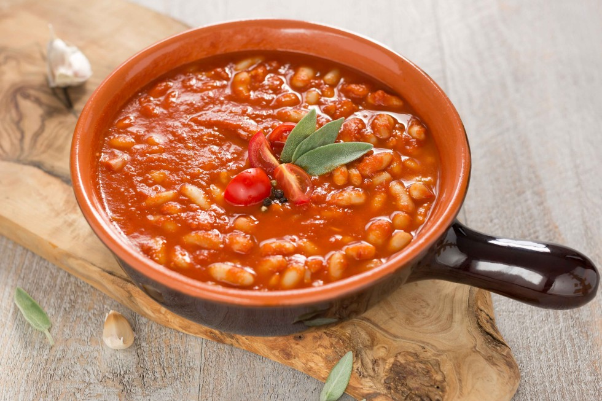

Fagioli all'uccelletto is an italian dish originating from Tuscany. It's made with a combination of cannellini beans, sage leaves, garlic, extra virgin olive oil, tomato paste, and fresh pork sausages. The beans and sausages are simmered over a low flame, then served with bread on the side.
Meal prep time : 14 minutes
Servings : 4